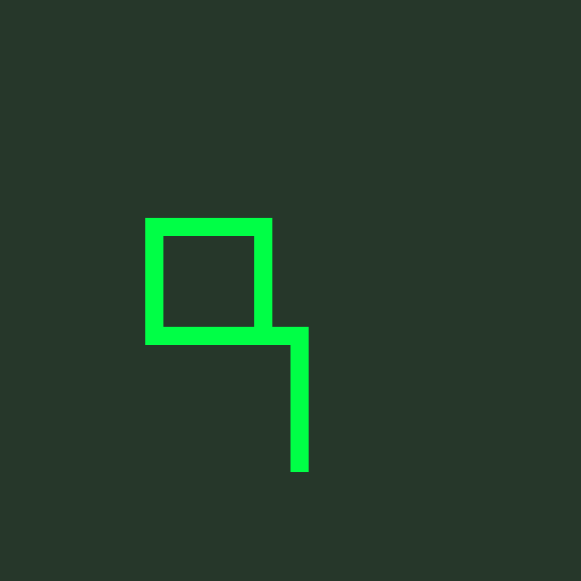
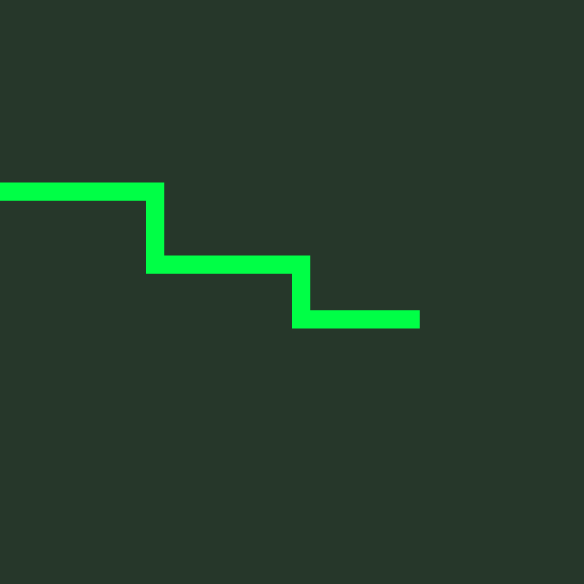
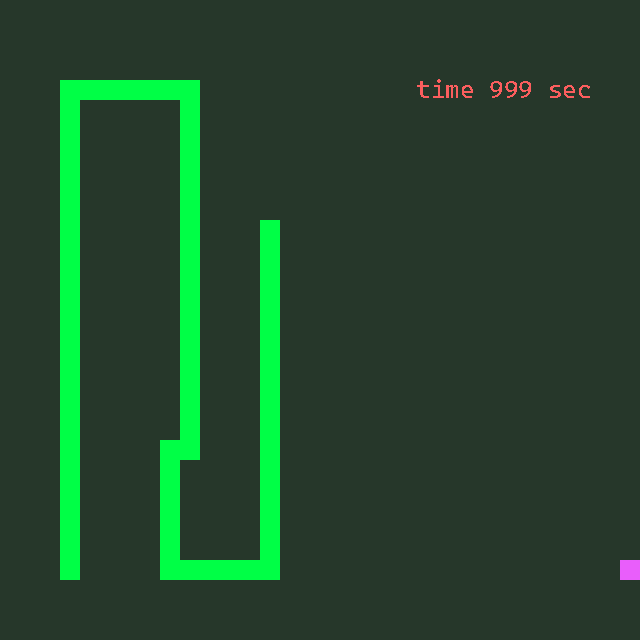
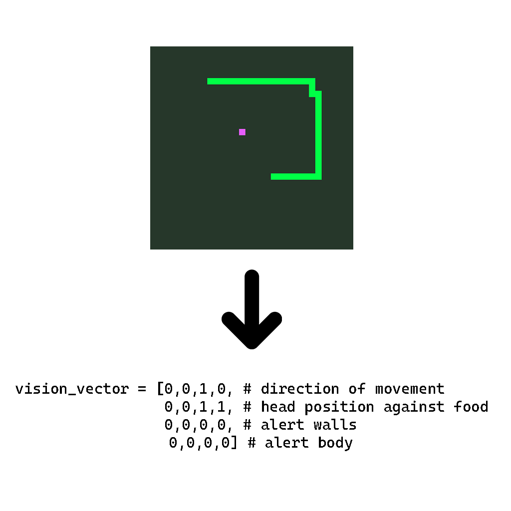
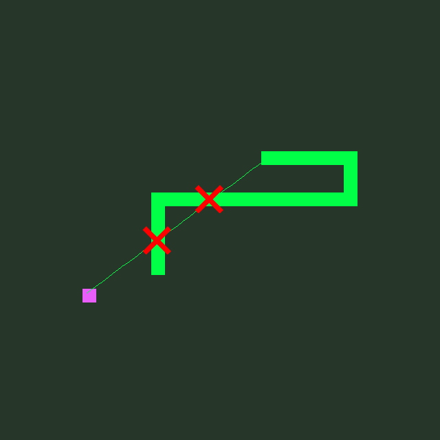
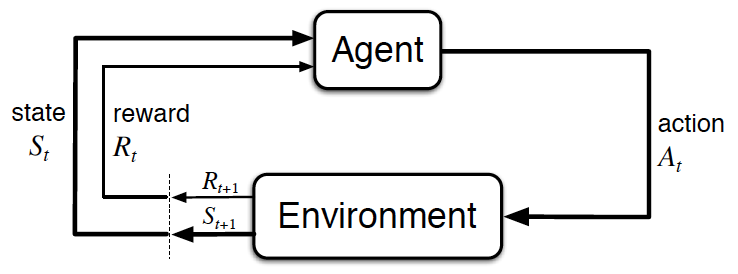
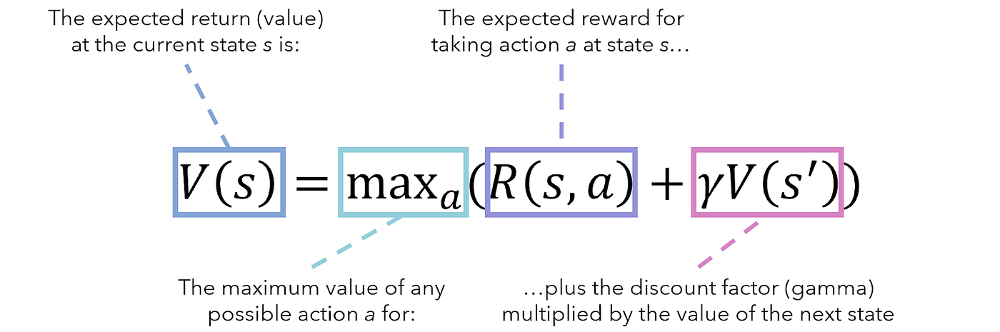

Snake Game
using reinforcement learning
El juego clásico de "Snake" ofrece un escenario perfecto para explorar los conceptos fundamentales del aprendizaje reforzado. En este juego simple pero adictivo, los jugadores controlan una serpiente que crece cada vez que consume un objeto, pero pierden si la serpiente choca consigo misma o con los bordes del tablero. Esta dinámica elemental presenta desafíos que son fácilmente traducibles al ámbito del aprendizaje reforzado. Los temas se abordarán de forma ligera ya que se entiende que el lector tiene los conocimientos básicos de esto.
Comenzaremos por definir qué son los agentes en el contexto del aprendizaje reforzado.
Los agentes son entidades que toman decisiones basadas en predicciones realizadas en el
pasado inmediato y reciben recompensas según los resultados de esas decisiones.
En el caso de nuestro estudio, el agente actuará como el 'jugador' que aprenderá
a jugar al juego de Snake.
Para entrenar a este agente, utilizamos la red neuronal conocida como Deep Q-Learning,
la cual es una herramienta poderosa en el ámbito del aprendizaje reforzado. Esta red se fundamenta
en las propiedades de Markov, donde cada estado (es decir, la información
que el agente recibe sobre su entorno) no está influenciado por las decisiones tomadas en el pasado.
Por lo tanto, cada estado contiene toda la información necesaria para tomar una nueva decisión. Un ejemplo
práctico que no cumple con estas propiedades sería un juego de póker, donde cada jugada está condicionada
por el comportamiento previo de los oponentes, convirtiéndolo en un juego donde las decisiones pasadas influyen
en el curso del juego.
Desiciones
red deberá retornar una de las siguientes decisiones
- Seguir con su direccion actual
- Girar a la izquierda
- Girar a la derecha

Recompensas
El Sistema otorgará diferentes recompensas al agente de acuerdo a sus decisiones:
- Comer fruta (+10 pts)
- Chocar contra una pared (-10 pts)
- Chocar consigo mismo (-10 pts)
- Esperar demasiado tiempo entre frutas (-10 pts)
- Ninguno de los escenarios anteriores (0 pts)



De esta forma a lo largo de un solo juego se podrá tener un puntaje para cuantificar la calidad de las jugadas/decisiones tomadas.
Visión del agente
El agente logra interpretar la escena a través de una función que recopila información básica del fotograma actual del juego y retorna un vector de estado. Esta función genera una guía de ubicaciones y factores que ayudan al agente a comprender su posición en cada momento. Estas guías se construyen mediante vectores binarios que indican la dirección (arriba, abajo, izquierda, derecha). El vector de la escena incluye información sobre la dirección de la serpiente, la orientación de la comida con respecto a la cabeza de la serpiente, las alertas de peligro para su propio cuerpo en los fotogramas siguientes, y alertas de proximidad a las paredes.

vision vector ilustration
Entrenamiento
Durante la etapa inicial de parametrización, se identificó un problema recurrente en el que la serpiente chocaba con su propio cuerpo con demasiada frecuencia, lo que impedía superar un puntaje máximo de 50. Esto ocurría porque la serpiente perseguía su comida sin considerar que su longitud corporal crecía. Para abordar este problema, se propuso un sistema en el que la cola de la serpiente bloquea su visión de la comida si esta se encuentra en su trayectoria. Podemos visualizarlo como si la serpiente pudiera olfatear su comida, pero su propio cuerpo obstaculizara este sentido. Con este pequeño ajuste, se esperaba que la serpiente tenga como prioridad evitar chocar consigo misma y luego, en segundo lugar, busque activamente la comida. Este cambio impulsó la obtención de puntajes máximos considerablemente mejores.
El siguiente diagrama ilustra en resumen lo recién descrito

snake and vision blocked
El flujo total y la secuencia de eventos pueden describirse de la siguiente manera: Se inicia alimentando al agente con la información del estado del fotograma anterior. El agente utiliza esta información para realizar un movimiento, y luego se transmite la decisión al juego para que devuelva la recompensa asociada a esa decisión y se calcule el nuevo estado resultante. Durante esta iteración del fotograma, el agente también se entrena. Además, se lleva a cabo un entrenamiento adicional al finalizar cada partida con un "game over", utilizando una muestra de las decisiones tomadas durante esa partida. Cada entrenamiento actualiza el valor de Q de la red neuronal utilizando la ecuación de Bellman, Q proviene de quality que es el objetivo de la red, Tomar acciones de calidad

flow architecture

Bellman's equation
Durante las etapas iniciales del entrenamiento de la serpiente, se implementa un período de exploración. Para ello, se agregan movimientos aleatorios en las primeras 200 partidas del juego. Este enfoque podría compararse con la introducción de un viento o ruido que induce a la serpiente a tomar decisiones aparentemente irracionales. El propósito de esta fase es permitir que la serpiente explore diferentes áreas de su entorno y comprenda los posibles riesgos que puede enfrentar en su entrenamiento futuro. Una vez superada esta fase, la serpiente desarrolla una noción básica de cómo jugar, lo que acelera significativamente su aprendizaje.
La siguiente secuencia de animaciones muestran las diferentes épocas que pasó la serpiente durante su entrenamiento.


Durante el desarrollo y ajuste de parámetros de este proyecto, inevitablemente surgieron cuestionamientos filosóficos sobre las similitudes entre este proceso de aprendizaje reforzado y el aprendizaje humano a lo largo de la vida. Esto nos lleva a reflexionar sobre cómo cometer muchos errores en las primeras etapas de la vida puede crear las situaciones que nos permitirán entender y tomar las mejores decisiones en el futuro.
El código completo de este proyecto, junto con su documentación pertinente, está disponible en mi repositorio de Github